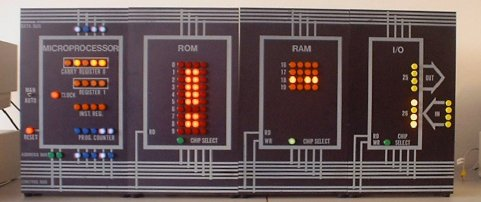
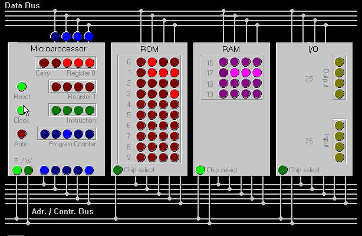
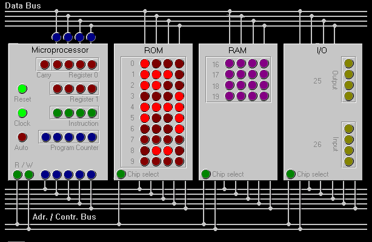

Einleitung
Dieses Java Applet wurde im Rahmen einer Fallstudie vom 30.4. - 8.5.1999 an der WIS
Luzern von Michel Marti und Benno Kurmann programmiert. Es emuliert den 4-Bit Democomputer
von Prof. Dyntar, Dozent am ZTL Horw. Dieser Computer zeigt auf einfache Art und Weise,
wie ein Miniprogramm von einem Computer abgearbeitet wird. Anhand von Lämpchen ist nach
jedem Prozessortakt ersichtlich, welche Bits auf Bus, Register und externem Speicher
gesetzt sind.
|  |
Der Democomputer kann entweder in einem Java-fähigen Browser oder via SUN's "AppletViewer" gestartet werden.
Der Democomputer arbeitet ein Programm ab, das im ROM gespeichert ist. Ein ROM-Wort ist
4 Bit breit, das heisst es sind 24 = 16 Zustände pro Wort möglich. Dies
entspricht auch genau dem implementierten Befehlssatz, der aus
16 Befehlen besteht.
Im Democomputer wird zwischen Einwort- und Zweiwortbefehlen unterschieden:
Nachdem ein Programm programmiert wurde und der Democomputer gestartet wird, holt sich
die CPU den Befehl aus der ROM-Adresse 0 ins Instruktionsregister. Dieser Vorgang wird als
"Fetch" bezeichnet. Anschliessend wird dieser Befehl ausgeführt, was als
"Execute" bezeichnet wird.
Um einen Befehl abzuarbeiten, benötigt der Microprocessor (CPU) mehrere
Prozessortaktzyklen. Im Democomputer gelten folgende Taktzyklen für die Ausführung eines
Befehls :
1.a) Fetch-Phase : 4 Taktzyklen
1.b) zweites Fetch, falls es sich um einen Zweiwortbefehl handelt : 3 Taktzyklen
2. Execute-Phase : 1 bis 3 Taktzyklen
Microprocessor
Dieses Modul stellt eine einfache CPU dar. Sie besteht aus folgenden Elementen :
ROM
In diesem Modul kann mit der Maus eine Folge von maximal zehn 4-Bit Befehlen programmiert
werden.
RAM
Das Modul besteht aus vier 4-Bit Wörtern, welche von der CPU zum Speichern von Daten
benutzt werden können.
I/O
Im IN - Element kann mit der Maus ein Wort eingegeben werden, welches die CPU holen kann.
Das OUT-Element zeigt an, wenn die CPU ein Datenwort an den Out-Port des Democomputers
gelegt hat.
Bus
Der Zustand der verschiedenen Busse wird am oberen und unteren Ende des CPU Moduls
angezeigt.
Vor dem Start müssen Sie das ROM programmieren. Benutzen Sie dazu die Codes der Befehlsliste. Sie programmieren das ROM, indem Sie mit
der Maus auf die gewünschten "Lämpchen" klicken. Falls Ihr Programm den
Input-Port anspricht, versichern Sie sich, dass Sie auch dort den gewünschten Wert
programmiert haben.
Das Programm können Sie manuell oder automatisch ablaufen lassen.
- Automatisch : Klicken Sie auf den Auto-Knopf in der Microprocessor-Einheit
- Manuell : Klicken Sie auf den Clock-Knopf in der Microprocessor-Einheit. Mit jedem Klick
wird der nächste Prozessortakt ausgeführt.
Es ist jederzeit mitten in der Programmabarbeitung möglich, die ROM-Programmierung zu
ändern oder zwischen Auto und Manuell umzuschalten. Nachdem die letzte ROM Adresse
ausgeführt wurde, springt die CPU automatisch wieder an ROM-Adresse 0.
Mit dem Reset-Knopf werden alle Elemente ausser ROM, RAM und Input-Port auf 0 gesetzt.
Die Geschwindigkeit des Auto-Modus kann im HTML-File, welches das Applet startet, als
Parameter eingestellt werden. "Dalay value" gibt die Wartezeit zwischen den
Taktzyklen in Millisekunden an.
Als Beispiel eine Wartezeit von 200ms :
<APPLET ARCHIVE="democomp.jar" CODE="com.bastel.democomp.DemoComputer.class" WIDTH=614 HEIGHT=400> <param name=Delay value="200"> </APPLET>
| Mnemonic | Code | Anz. Worte | CPU-Zyklen | Beschreibung |
| Datentransferbefehle: | ||||
| MVI R0 | 0100 | 2 | 8 | unmittelbar folgendes Wort in Register 0 |
| MVI R1 | 0101 | 2 | 8 | Unmittelbar folgendes Wort in Register 1 |
| STO R0 | 0000 | 2 | 10 | Register 0 in RAM; 2. Wort RAM-Adresse |
| STO R1 | 0001 | 2 | 10 | Register 1 in RAM, 2. Wort RAM-Adresse |
| LD R0 | 0010 | 2 | 10 | RAM in Register 0; 2. Wort RAM-Adresse |
| LD R1 | 0011 | 2 | 10 | RAM in Register 1; 2. Wort RAM-Adresse |
| MOV R1,R0 | 1001 | 1 | 5 | Register 0 in Register 1 kopieren |
| MOV R0,R1 | 1010 | 1 | 5 | Register 1 in Register 0 kopieren |
| Input-/Outputbefehle: | ||||
| IN | 1000 | 1 | 7 | Input-Port in Register 0 |
| OUT | 1011 | 1 | 7 | Register 0 in Output-Port |
| Arithmetische Befehle: | ||||
| ADD R1 | 1101 | 1 | 5 | Register 1 + Register 0 (ohne carry), Resultat in R0 |
| Rotationsbefehle: | ||||
| ASL | 1110 | 1 | 5 | Register 0 links schieben, Überlauf in carry |
| RAR | 1111 | 1 | 5 | R0 rechts schieben, LSB in carry |
| Sprungbefehle: | ||||
| LMP | 0110 | 2 | 8 | Sprung zu ROM-Adresse in 2. Wort |
| JC | 0111 | 2 | 8 | Sprung zu ROM-Adresse in 2. Wort wenn carry = 1 |
| JNC | 1111 | 2 | 8 | Sprung zu ROM-Adresse in 2. Wort wenn carry = 0 |
Die RAM-Adressen im Democomputer sind 16-19. Diese Adressen lassen sich nicht mit 4 Bit
abbilden und können folglich im ROM nicht als Argument übergeben werden. Deshalb gelten
für RAM-Adressen im ROM eigene Regeln :
0000 - 0011 entsprechen den RAM-Adressen 16 - 19
kopiert ein Wort in Register 0 und schreibt dieses Wort anschliessend an die 2. Adresse
im RAM
|  |
| ROM | Beschreibung | CPU-Zykus | Erklärung | Phase |
| 0100 | Folgendes Wort in R0 | 1 | Adresse 0 (aus dem Programm Counter) wird auf den Adressbus gelegt. Chip select ROM leuchtet. | fetch |
| 2 | Wert aus ROM-Adresse 0 wird auf den Datenbus gelegt (0100). Contolbus wird auf READ gesetzt. | |||
| 3 | Wort aus dem Datenbus wird ins Instruktionsregister kopiert. Der Befehl wird dekodiert. | |||
| 4 | Programm Counter wird um 1 erhöht. | |||
| 0111 | Datenwort für R0 | 5 | Adresse 1 (aus dem Prg Counter) wird auf den Adressbus gelegt. | |
| 6 | Wert aus ROM-Adresse 1 wird auf den Datenbus gelegt (0111). CPU speichert Datenwort intern. | |||
| 7 | Programm Counter wird um 1 erhöht. | |||
| 8 | Datenwort (0111) wird in Register 0 geschrieben. | execute | ||
| 0000 | R0 in RAM | 1 | Adresse 2 (aus dem Programm Counter) wird auf den Adressbus gelegt. Chip select ROM leuchtet. | fetch |
| 2 | Wert aus ROM-Adresse 2 wird auf den Datenbus gelegt (0000). Contolbus wird auf READ gesetzt. | |||
| 3 | Wort aus dem Datenbus wird ins Instruktionsregister kopiert. Der Befehl wird dekodiert. | |||
| 4 | Programm Counter wird um 1 erhöht. | |||
| 0001 | RAM-Adresse | 5 | Adresse 3 (aus dem Prg Counter) wird auf den Adressbus gelegt. | |
| 6 | Wert aus ROM-Adresse 3 wird auf den Datenbus gelegt (0001). CPU speichert Datenwort intern. | |||
| 7 | Programm Counter wird um 1 erhöht. | |||
| 8 | Die RAM-Adresse wird auf den Adressbus gelegt. Chip select auf RAM. | execute |
||
| 9 | Die Daten aus R0 (0111) werden auf den Datenbus gelegt. | |||
| 10 | Der Controlbus wird auf WRITE gesetzt. Das Datenwort wird in RAM Adresse 17 geschrieben |
multipliziert den Wert am Input-Port solange mit 2, bis ein Registerüberlauf eintritt.
Dann erfolgt eine Division durch 2. Das Resultat wird in Register 1 gespeichert und ins
RAM kopiert. Auf eine Aufspaltung in einzelne Prozessorzyklen wird verzichtet.
|  |
| ROM Adresse |
Befehl Im ROM |
Erklärung |
| 0 | 1000 | Schreibt Wort an Input-Port in Register 0 |
| 1 | 1110 | Schiebt alle Bits in Register 0 eine Stelle nach links. (Entspricht der Operation * 2) |
| 2 | 1100 | Wenn Carry-Bit = 0, springe zu ... |
| 3 | 0001 | ... ROM Adresse 1 |
| 4 | 1111 | Schiebt alle Bits in Register 0 eine Stelle nach rechts |
| 5 | 1001 | Kopiert Register 0 in Register 1 |
| 6 | 0001 | Schreibt Register 1 an... |
| 7 | 0000 | ...RAM Adresse 16 |
| 8 | 0110 | Springt zu... |
| 9 | 0000 | ...ROM Adresse 0 (Endlos Loop) |